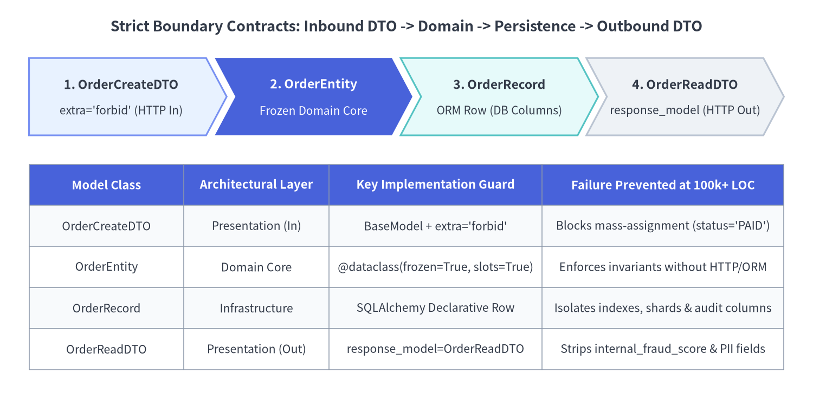

境界づけられたコンテキスト・パッケージ設計・内向き依存ルール
Python バックエンドを 10万行（100,000+ LOC）規模・数十人以上の開発体制へとスケールさせるには、routers/・models/・schemas/ といった技術レイヤ単位の水平分割から脱却し、厳格な内向き依存ルールに統治された 境界づけられたコンテキスト（Bounded Context） へと移行する必要があります。FastAPI v0.162.2 は、階層的に合成可能な APIRouter ツリー、Protocol 親和性の高い依存性注入（DI）、そして Pydantic v2 による厳格な境界契約によって、このモジュラーモノリス設計をネイティブに実現します。

1. なぜ水平レイヤ分割は 1.5万行を超えると破綻するのか
2,000行規模のチュートリアルや初期プロトタイプでは、app/routers/・app/models/・app/schemas/・app/crud/ のように技術的役割でディレクトリを分ける構成は直感的で見通しよく機能します。しかしコードベースが 15,000〜100,000行（LOC）以上 に成長すると、この水平分割は 閉鎖性共通の原則（CCP: Common Closure Principle） に違反し、1つの業務仕様変更がリポジトリ全体に散乱する「散弾銃の手術（Shotgun Surgery）」を引き起こします。
ソフトウェア工学の原則：高凝集と境界づけられたコンテキスト
大規模コードベースの保守性は、以下の3つの普遍的なソフトウェア設計原則に支えられています。
- 技術分類より業務スライスの凝集度を優先する: 「注文の部分返金」のような1つの機能追加は
src/orders/配下の変更だけで完結すべきであり、複数チームの PR が巨大フォルダ上で衝突する事態を防ぎます。 - 明示的なコンテキスト境界（DDD Bounded Context）:
identity/におけるAccount（認証情報・MFA・OAuth スコープ）と、billing/におけるAccount（税務番号・与信枠・請求条件）は本質的に異なる概念です。パッケージを分離することで、全チームが共有する80カラムの「神Userテーブル」の肥大化を阻止できます。 - コンテキスト横断の ORM
JOIN禁止: 他のコンテキストの SQLAlchemy モデルを直接 import して SQLJOINするのではなく、公開ポート（Protocol）またはドメインイベント経由でのみ連携します。データ自律性を守ることで、将来billing/のような高負荷ドメインだけをビジネスロジック無改修でマイクロサービスへ切り出せます。
FastAPI での実践：階層的 APIRouter ツリー合成
FastAPI の APIRouter は重量級のコントローラ基底クラスではなく、軽量なルート登録ツリーです。各コンテキストは内部のパッケージ構造を自律的に管理し、最上位の合成ルート（src/main.py）に対しては薄い router オブジェクトのみを公開します。
src/
├── main.py # ASGI 合成ルート (lifespan, 例外ハンドラ, v1_router 統合)
├── shared/ # 横断基盤 (OpenTelemetry, RFC 9457 エラー応答, UoW 基底)
├── identity/ # 境界づけられたコンテキスト: 認証・テナント RBAC
│ ├── domain/ # 純粋エンティティ・値オブジェクト・DomainError 派生例外
│ ├── application/ # UseCase・Protocol ポート定義
│ ├── infrastructure/ # SQLAlchemy / OIDC アダプタ実装
│ └── presentation/ # FastAPI APIRouter・Annotated DI 定義・Pydantic DTO
├── orders/ # 境界づけられたコンテキスト: 注文ライフサイクル・在庫引当
│ ├── domain/
│ ├── application/
│ ├── infrastructure/
│ └── presentation/
└── billing/ # 境界づけられたコンテキスト: 請求発行・決済キャプチャ
├── domain/
├── application/
├── infrastructure/
└── presentation/
2. 内向き依存ルール（クリーン／ヘキサゴナルアーキテクチャ）
ドメイン単位でディレクトリを分割しただけでは不十分です。各コンテキスト（src/orders/）の内部では、すべてのソースコード依存が HTTP 通信層や DB ドライバから ビジネスルール（Domain Core）へ向かって厳密に内向き に向かう必要があります。

なぜ Domain 層で fastapi や HTTPException を import してはならないのか
成長中の FastAPI プロジェクトで最も頻発する設計負債が、ドメインサービスやリポジトリの深部で raise HTTPException(status_code=409, detail=...) を送出したり、fastapi.Request をそのまま引数で受け渡したりする実装です。10万行規模では、この結合が3つの重大な問題を生みます。
- HTTP 以外の実行経路で再利用不能になる: 同じ注文確定ロジックを管理 CLI バッチ、Kafka / PubSub コンシューマ、あるいは非同期ワーカーから呼び出そうとした瞬間に、HTTP ステータスコード（
409）やRequestヘッダが破綻します。 - 単体テストに HTTP スキャフォールディングを強いられる: 金額計算や在庫引当の不変条件を検証したいだけにもかかわらず、ダミーの Starlette
Request構築や JSON エラー応答のパースが必要になります。 - ORM セッションの漏洩とトランザクション境界の崩壊: 生の SQLAlchemy
AsyncSessionをドメインモデルへ渡すと、計算途中で暗黙の遅延ロード（Lazy Load）が発火し、トランザクション境界が曖昧になります。
純粋なドメインポート（Protocol）と UseCase の実装パターン
モダンな Python（3.10+）では、依存関係逆転の原則（DIP）を実現するために重厚な抽象基底クラス階層や外部 DI コンテナライブラリを導入する必要はありません。ドメインエンティティは @dataclass(frozen=True, slots=True) で不変化し、インフラ層との境界は標準ライブラリの typing.Protocol（構造的部分型）で宣言します。
# src/orders/domain/entities.py — FastAPI・Pydantic・ORM への依存ゼロ！
from dataclasses import dataclass
from typing import Protocol
class DomainError(Exception):
"""トランスポート層に依存しない業務ルール違反の基底例外。"""
class InsufficientInventoryError(DomainError):
def __init__(self, sku: str, requested: int, available: int) -> None:
self.sku = sku
self.requested = requested
self.available = available
super().__init__(
f"SKU '{sku}' requested {requested} units, but only {available} available."
)
@dataclass(frozen=True, slots=True)
class OrderLine:
sku: str
quantity: int
unit_price_cents: int
@dataclass(frozen=True, slots=True)
class OrderEntity:
order_id: str
tenant_id: str
customer_id: str
lines: tuple[OrderLine, ...]
status: str = "CONFIRMED"
@property
def total_cents(self) -> int:
return sum(line.quantity * line.unit_price_cents for line in self.lines)
class OrderRepositoryPort(Protocol):
async def save(self, order: OrderEntity) -> OrderEntity: ...
async def get_by_id(self, order_id: str) -> OrderEntity | None: ...
# src/orders/application/use_cases.py — Protocol ポートを介した純粋なユースケース編成
class PlaceOrderUseCase:
def __init__(self, repo: OrderRepositoryPort, stock_by_sku: dict[str, int]) -> None:
self._repo = repo
self._stock = stock_by_sku
async def execute(
self,
*,
order_id: str,
tenant_id: str,
customer_id: str,
lines: list[OrderLine],
) -> OrderEntity:
for item in lines:
available = self._stock.get(item.sku, 0)
if item.quantity > available:
raise InsufficientInventoryError(item.sku, item.quantity, available)
entity = OrderEntity(
order_id=order_id,
tenant_id=tenant_id,
customer_id=customer_id,
lines=tuple(lines),
)
return await self._repo.save(entity)
3. DTO と永続化モデルの分離：Mass-Assignment 脆弱性と内部カラム漏洩の防止
小規模なプロトタイプでは、HTTP リクエスト JSON・ドメイン状態・DB テーブル行・HTTP レスポンス JSON をたった1つの共有モデルクラスで兼用してしまうケースが見られます。エンタープライズ開発においてこの4つの境界を融合させると、深刻なセキュリティ脆弱性とスキーマ変更の硬直化を招きます。

FastAPI での実践：入力 extra="forbid" と出力 response_model による二重防護
すべての APIRouter エンドポイントにおいて、ConfigDict(extra="forbid") を設定した入力専用 DTO と response_model=OrderReadDTO を対で宣言します。これにより、不正フィールド注入（Mass-Assignment）を入力端で遮断しつつ、internal_fraud_score や shard_routing_key といった永続化層の内部管理カラムが外部レスポンスへ漏洩することを構造的に防止します（Rust 製 TypeAdapter による直列化パイプラインの詳細は レスポンス直列化と OpenAPI 3.1 を参照してください）。
# src/orders/presentation/router.py — 厳格な DTO 境界契約と階層的 APIRouter 合成
from dataclasses import dataclass
from typing import Annotated
from fastapi import APIRouter, Depends, FastAPI, status
from pydantic import BaseModel, ConfigDict, Field
class OrderLineInputDTO(BaseModel):
model_config = ConfigDict(extra="forbid", str_strip_whitespace=True)
sku: str = Field(min_length=3, max_length=32, pattern=r"^[A-Z0-9_-]+$")
quantity: int = Field(gt=0, le=1000)
unit_price_cents: int = Field(gt=0)
class OrderCreateDTO(BaseModel):
# 未定義フィールド（例: status="PAID"）の混入を 422 Unprocessable Content で即座に拒否
model_config = ConfigDict(extra="forbid", str_strip_whitespace=True)
customer_id: str = Field(min_length=3, max_length=64)
lines: list[OrderLineInputDTO] = Field(min_length=1, max_length=50)
@dataclass
class OrderRecord:
"""内部管理メタデータを含むインフラ永続化レコード。"""
order_id: str
tenant_id: str
customer_id: str
total_cents: int
status: str
internal_fraud_score: float = 0.02
shard_routing_key: str = "shard-ap-northeast-1a"
class OrderReadDTO(BaseModel):
"""外部公開用レスポンス契約（internal_fraud_score や shard_routing_key を除外）。"""
model_config = ConfigDict(from_attributes=True)
order_id: str
customer_id: str
total_cents: int
status: str
orders_router = APIRouter(prefix="/orders", tags=["orders"])
@orders_router.post("", response_model=OrderReadDTO, status_code=status.HTTP_201_CREATED)
async def create_order(
payload: OrderCreateDTO,
use_case: Annotated[PlaceOrderUseCase, Depends(get_place_order_use_case)],
) -> OrderRecord:
entity = await use_case.execute(
order_id="ord_2026_001",
tenant_id="tnt_enterprise",
customer_id=payload.customer_id,
lines=[
OrderLine(
sku=item.sku,
quantity=item.quantity,
unit_price_cents=item.unit_price_cents,
)
for item in payload.lines
],
)
return persist_and_load_record(entity)
# src/main.py — 最上位での API バージョンツリー合成
v1_router = APIRouter(prefix="/api/v1")
v1_router.include_router(orders_router)
app = FastAPI(title="Enterprise Commerce API")
app.include_router(v1_router)
4. アーキテクチャ境界を CI で機械的に強制する（Fitness Functions）
30名以上のエンジニアが並行開発する10万行超のリポジトリでは、Wiki 上のドキュメントに書かれただけの設計規約は納期プレッシャーのもとで必ず形骸化します。パッケージ間の依存方向と型契約は CI で自動検証される適応度関数（Architectural Fitness Functions） としてコード化してください。
FastAPI のルート／DTO モジュールで from __future__ import annotations を避けるべき理由
型注釈を実行時に無視する純粋な静的解析用途とは異なり、FastAPI v0.162.2 と Pydantic v2 は アプリケーション起動時に typing_inspection と get_typed_signature を用いて関数シグネチャと Annotated[...] メタデータを実行時イントロスペクションし、OpenAPI 3.1 スキーマ・バリデータ・依存グラフを構築します。
[!IMPORTANT] FastAPI 型注釈の実践ルール: Python
3.10+ではX | Yユニオン型やlist[str]/dict[str, Any]ジェネリクスが標準で実行時評価でき、Python3.14では PEP 649 による遅延評価もネイティブ実装されています。FastAPI のrouter.py・dependencies.py・Pydanticschemas.pyではfrom __future__ import annotationsを記述しないでください。 全注釈を文字列化すると、ローカルスコープ型やif TYPE_CHECKING:背後の型を参照した際に実行時前方参照解決エラーの原因となります。
静的ガバナンスの自動化（mypy / ty・ruff・import-linter）
py.typed（PEP 561）マーカーと厳格な型検査（mypy --strict または Astral ty）、FastAPI 専用ルール（FAST）を有効化した ruff、そしてレイヤ違反の import を即座に CI 失敗させる import-linter を pyproject.toml に統合します。
# pyproject.toml — 10万行規模コードベースを守る自動アーキテクチャ検査設定
[tool.mypy]
python_version = "3.12"
strict = true
plugins = ["pydantic.mypy"]
disallow_any_generics = true
[tool.ruff.lint]
select = [
"E", "F", "I", "B", "UP",
"FAST", # FastAPI 専用 Lint ルール (冗長な response_model や Depends 宣言を検出)
"TID251", # 禁止モジュールの import 検査
]
[tool.ruff.lint.per-file-ignores]
# Domain・Application 層はフレームワーク非依存を厳守
"src/*/domain/**" = []
[[tool.importlinter.contracts]]
name = "Domain and Application never import FastAPI or SQLAlchemy"
type = "forbidden"
source_modules = ["src.orders.domain", "src.orders.application"]
forbidden_modules = ["fastapi", "starlette", "sqlalchemy"]
[[tool.importlinter.contracts]]
name = "Bounded Contexts remain independent of peer infrastructure"
type = "independence"
modules = [
"src.orders.infrastructure",
"src.billing.infrastructure",
"src.identity.infrastructure",
]
境界づけられたコンテキストと内向き依存レイヤが確立できたところで、次節の 大規模 DI・Lifespan 管理・テスト戦略 に進み、コネクションプールの Lifespan 管理、スコープ付き Unit-of-Work セッション注入、RFC 9457 ドメイン例外変換、そして高速テストピラミッドの具体的な構築手法を確認しましょう。